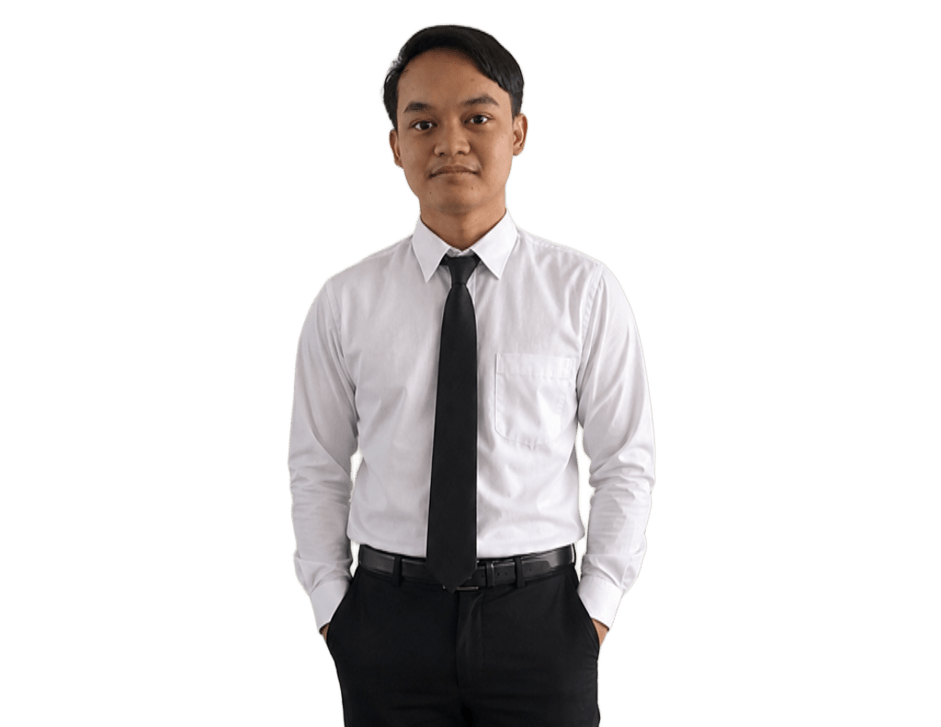
About Me
A Bachelor’s degree graduate in Electrical Engineering with a Diploma in Electronics Engineering and experience in electronics, embedded systems, automation, robotics, and IoT. Skilled in developing ESP32/Arduino based systems, working with sensors, PLC, electrical installation, testing, and troubleshooting.
Experienced as an Audio-Video Technician Intern, handling equipment installation, technical troubleshooting, system integration, and quality control. Also experienced in teaching as a Teaching Assistant, supporting lecturers during learning activities and helping students understand technical and academic subjects. Has leadership and project coordination experience, with good analytical, problem solving, teamwork, and communication skills.
Education
Skills
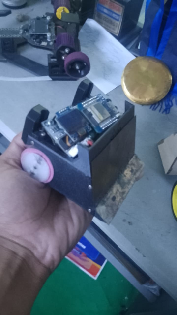
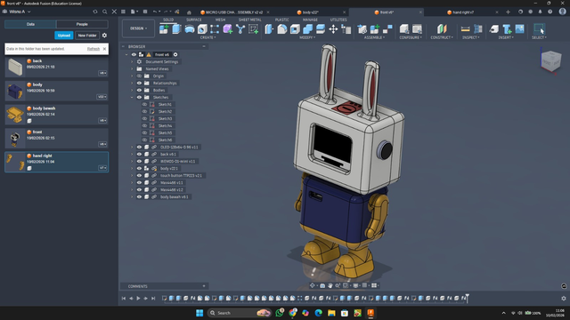
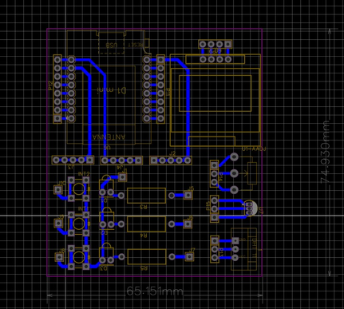
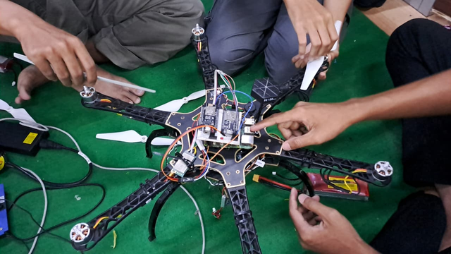
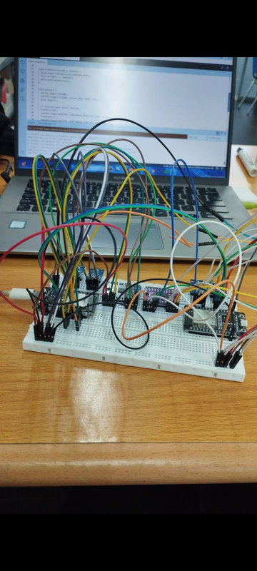
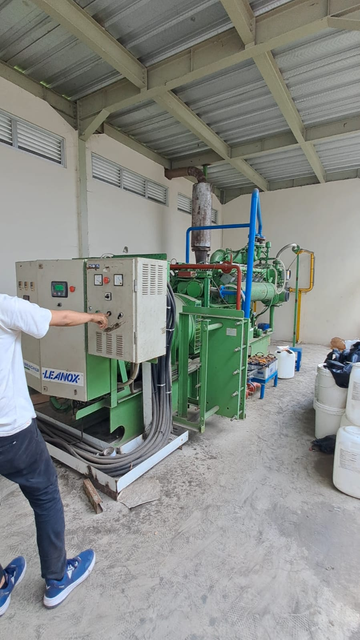
Internship
- Diagnosed and resolved hardware and software issues through systematic troubleshooting and testing.
- Coordinated equipment installation and configuration at client sites according to technical requirements.
- Integrated audio-video equipment with computers, controllers, and network systems to support overall system operation.
- Fabricated and modified spare parts to support repair and maintenance activities.
- Worked with team members to complete troubleshooting, installation, and equipment maintenance tasks within operational requirements.
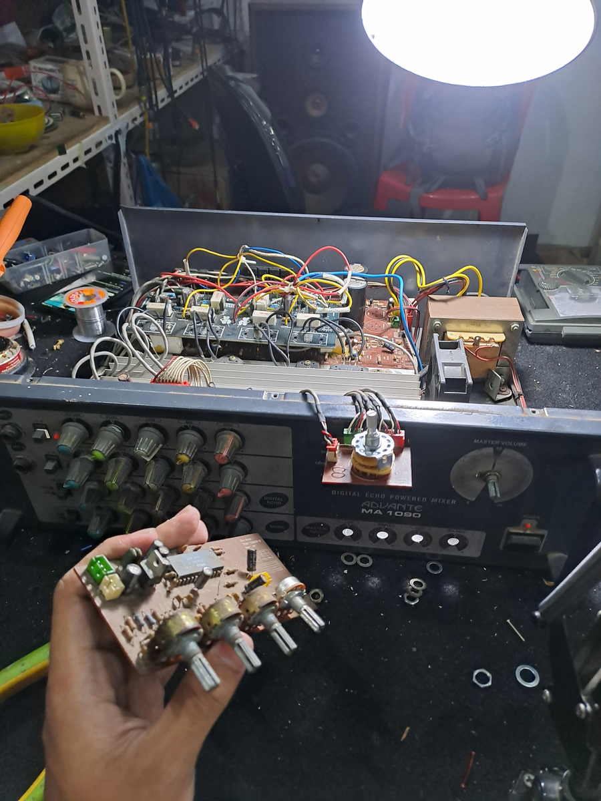
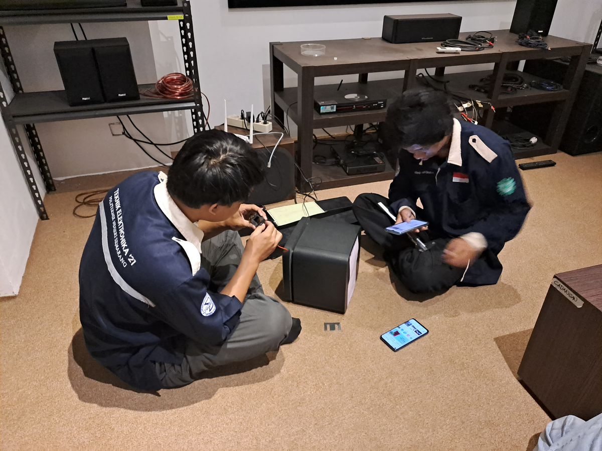
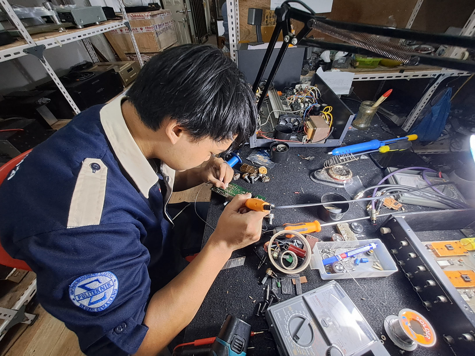
Organization
- Lead and coordinated the futsal division in planning and executing training programs and organizational activities.
- Coordinated team members and managed task distribution to ensure activities were carried out effectively.
- Organized and supervised training sessions, internal activities, and team preparations for competitions.
- Lead and coordinated the Electrical Division in supporting robotics projects and technical activities.
- Coordinated team members during project development, troubleshooting, and technical execution.
- Supported team decision-making and problem solving during project activities.
- Managed robotics equipment and component inventory to support project and organizational activities.
- Coordinated equipment availability, tracking, and utilization among team members.
- Developed and implemented an inventory management website to improve the organization of equipment and component tracking.
Additional Experience
- Contributed to the preparation and execution of the New Student Orientation Program.
- Assisted in participant coordination and ensured activities ran according to plan.
- Assisted lecturers with laboratory sessions and learning activities.
- Guided students in understanding basic physics concepts and solving problems.
- Helped prepare laboratory equipment and support academic activities.
- Presented developed products to exhibition visitors.
- Explained product functions, working principles, technology, and key features.
- Answered questions and provided technical information to the audience.
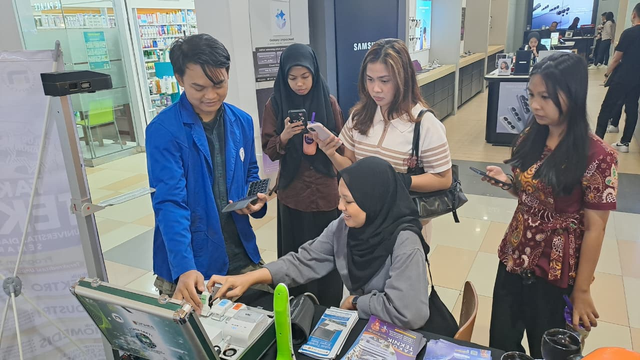
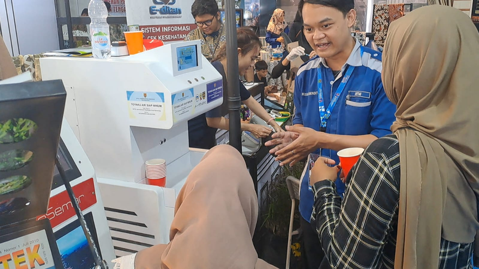
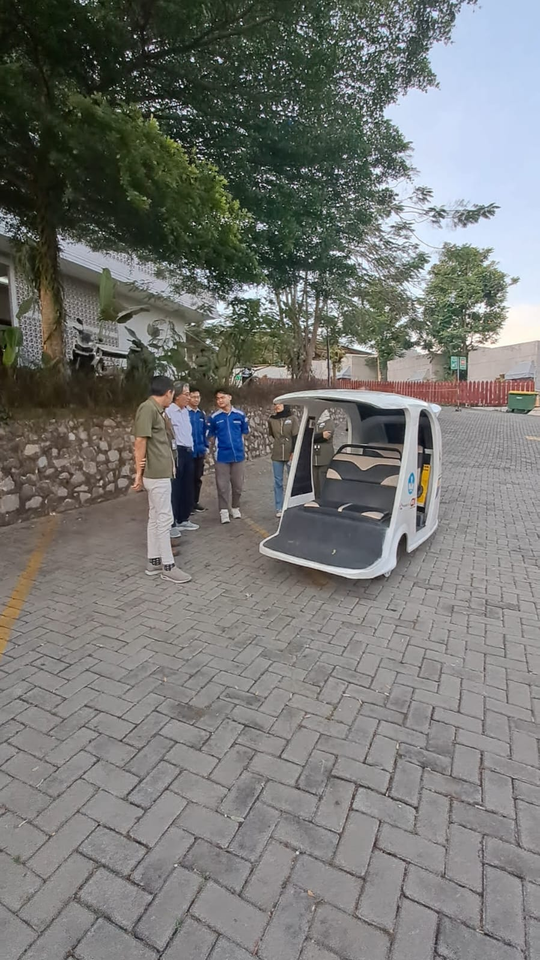
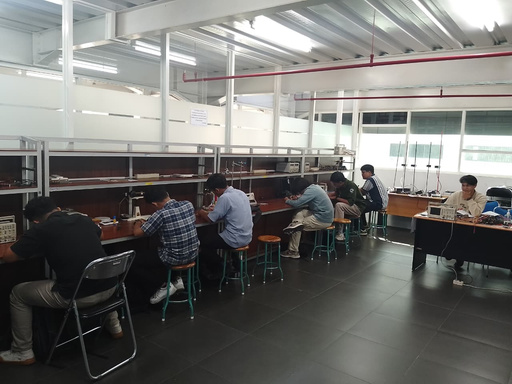
Projects
Klik kartu untuk melihat detail proyek.
Design and Development of a Speech Learning Aid for Deaf Students
- Designed and developed the ESP32-S3-based hardware system.
- Integrated microphones, sound vibration sensors, OLED, push buttons, and vibration motors.
- Programmed the microcontroller for sound detection and feedback.
- Contributed to the development of the web interface.
- Conducted system integration, testing, and performance evaluation.
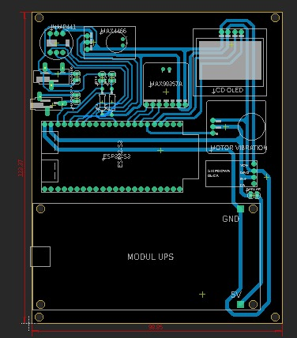
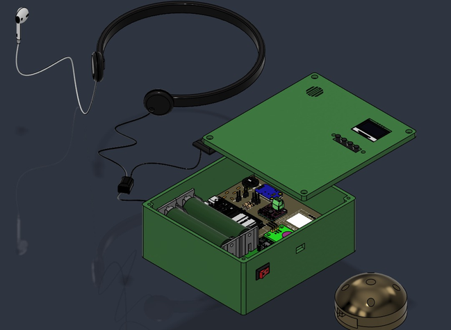
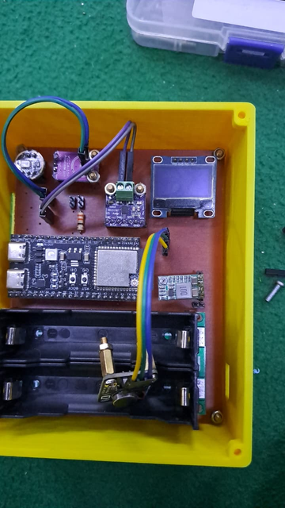
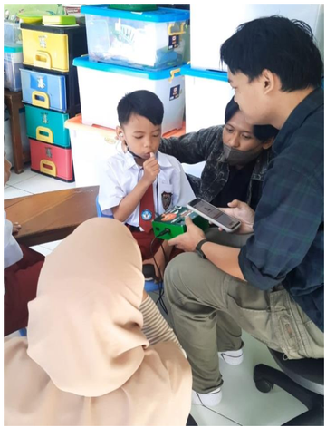
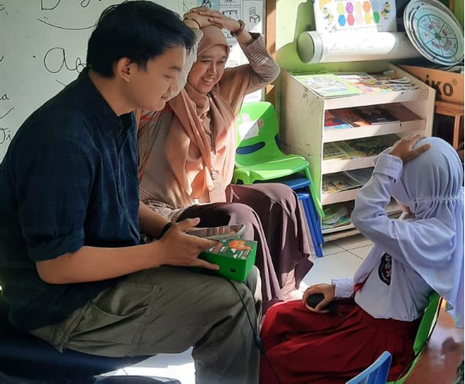
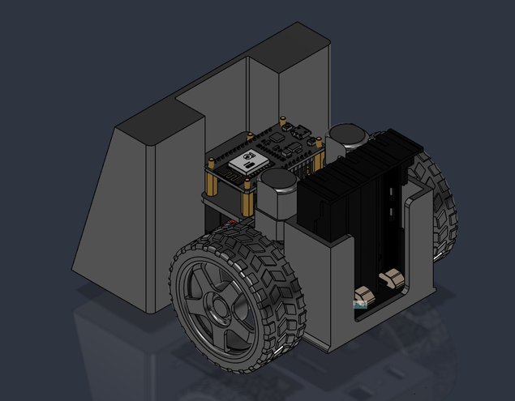
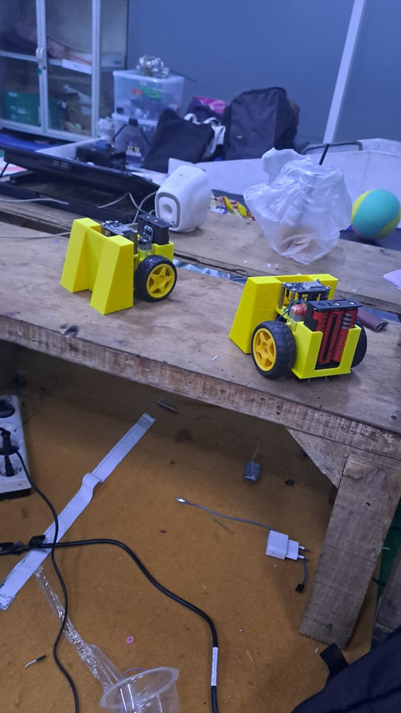
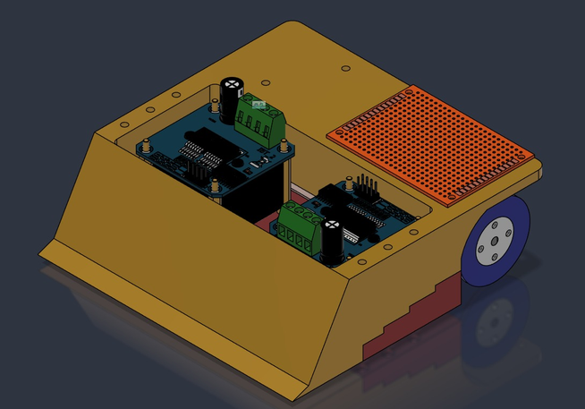
Soccer Robot and Sumo Robot Development
Developed soccer and sumo robots using microcontrollers, focusing on electronic control systems, motor integration, programming, and robot movement.
- Designed and integrated electronic control systems using microcontrollers.
- Programmed robot movement and response mechanisms.
- Integrated DC motors, motor drivers, sensors, and electronic circuits.
- Conducted movement testing, calibration, and troubleshooting.
- Improved robot responsiveness and movement stability.
UAV with Fire Detection and Offline Ground Control Station (GCS)
Developed a UAV system for area monitoring and fire detection, supported by an offline GCS to display flight information, GPS location, telemetry, and fire detection results without internet. KRTI Finalist.
- Contributed to UAV hardware and system development.
- Assisted in integrating the fire detection system.
- Worked on GPS, telemetry, and data communication integration.
- Contributed to the development and testing of the offline GCS.
- Performed system testing, troubleshooting, and performance evaluation.
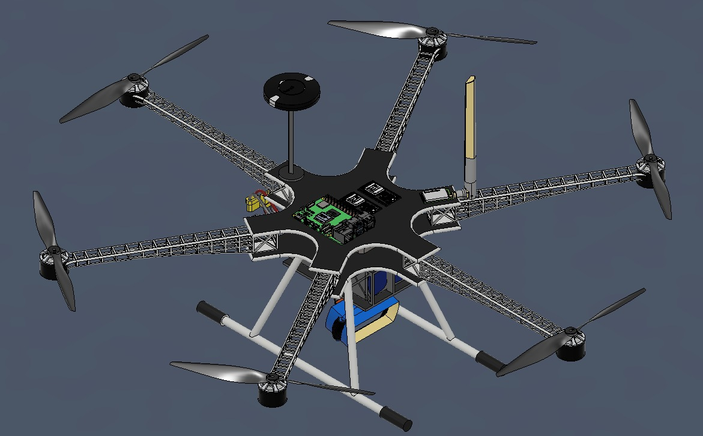
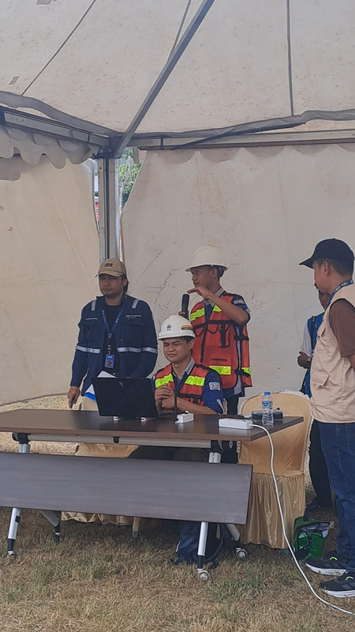